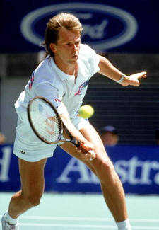
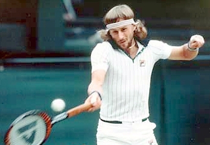
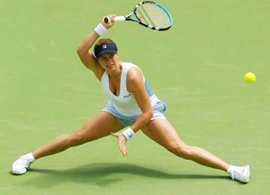
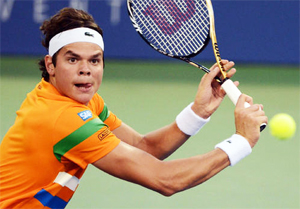

Previous: The Pro Overhead | 🏠 Classic Lessons Home | Next: The Slice Backhand
The Return of Serve and Volley Will It Ever Happen?
Comprehensive unified tennis knowledge base — Fundamentals, Stroke Analysis, Reference Library, and more
The Return of Serve and Volley Will It Ever Happen?
By Kerry Mitchell
Could serve and volley again be a winning style in pro tennis?
As a long-time coach, I’m often asked will serve and volley type players ever return at the highest levels of the game? This is a complicated question that is impossible to answer with just a yes or no.
There are many factors to consider such as racket technology, string technology, court speeds, swing shapes, and training regimes. The final factor, which is always the wild card, is the mind and heart of a great champion.
No one can predict where the next great champion will take the game. What a great champion does is play the game on his own terms not others. If serve and volley tennis does return, it will be because a champion emerges who chooses that style and can impose it on the game.
Playing Factors
Let’s look at what makes a great volleyer. When I say great volleyer, I’m talking about a player who is predominately winning or losing points at the net. We all know the names of past great serve and volley players: Jack Kramer, Rod Laver, Billie Jean King, Martina Navratilova, John McEnroe, Stefan Edberg, and Pete Sampras among others.

Stefan Edberg, one of the last great serve and volley champions.
What made them the players they were? Was it the era in which they learned to play, the type of rackets they used, or the surface they played on or the way they were trained to swing the racket?
Conversely what is preventing the ascendency of the next great serve and volley player? New racket and string technology, slower surfaces or technical changes in swing patterns? Is it what I call the monolithic training methods that are dominant all over the world?
All of these factors must be considered. But the overriding factor is the players themselves.
Training
Let me start with training which I feel greatly impedes the potential for serve and volley play. When I say training is now monolithic, I mean everyone is trained in virtually the same way.
Heavy groundstrokes, heavy topspin, big serves. Intense physical conditioning, both on the court and in the gym with world class professional trainers.
Has this type of training been successful? Yes, of course, but it has limited the individuality of the game and the way it is played. What we see are excruciating backcourt exchanges and Grand Slam finals that last 5 hours.
The Borg Irony

Ironically, the individuality of Borg led to the conformity of today.
It’s ironic when we look back to the example of Bjorn Borg, who started the demise of the serve and volley type player. I remember starting out in the game myself, idolizing him not just because he won a lot of tournaments, but because he was an individual who bucked the current system of the time.
Just as today, the predominant training mode was monolithic. Everyone was told the only way to win was to get to the net. The training techniques were set in stone.
So, Borg’s game baffled and threatened the coaches and trainers of his era. They were very critical and even dismissive of his strokes and tactics.
After handing him a Grand Slam trophy, the former champion and commentator Tony Trabert had the audacity to advise Bjorn to change his forehand grip. The prevailing wisdom was that he could never succeed consistently on faster surfaces or against great serve and volley players with his game.
And the critics were completely wrong. With his use of topspin and his incredible fitness Borg changed the game forever. After he started to have greater and greater success, the coaching establishment was forced to study him in order to catch up to the changes he brought to the game.
Incredible dipping spin changed the game in favor of the passing shot.
Technology
Another issue affecting the possible return of the serve and volley is the new racket and string technology. The commentators have convinced themselves and others that this is the most important issue.
I don’t believe this is entirely true, but rackets and strings are huge factors. The rackets today allow a defensive player to hit much harder, thus giving the net player less time to cover the volley.
The oversize heads have made it possible to return more serves and return more serves more aggressively, as Andre Agassi has pointed out. It is possible to hit a high-quality return now without finding the precise center of the racket. This was virtually impossible in the days of wood.
The strings make creating spin far easier. Studies show that poly strings can generate up to 33% more spin than gut or other synthetics.
This allows players to dip the ball at the incoming net player more easily. Clean passing shots can be struck from positions on difficult balls that were simply impossible with wood rackets.
These changes have rendered the conventional down the line slice approach—a cornerstone of the older attacking tennis—virtually obsolete.
Today’s rackets make it difficult to take speed off the ball.
As John Yandell has pointed out, the general level of topspin makes it very difficult to control the ball with a classic, relatively flat slice drive. (Click Here.) The modern slice has the same kind of astronomical spin levels as the topspin groundstrokes, but travels much slower, relatively speaking. This has made coming in behind a slice approach on the first short ball something like a suicide charge.
The great additional irony about these changes in strings and rackets is that they have not only made the groundstrokes substantially heavier and more powerful, they have actually made it more difficult to volley.
A good volley is about control and placement, not power. The volley in most cases is about taking speed off the ball not adding to it.
The rackets today make it very difficult to do that since they are so alive with power. Deadening the ball with a wood racket was natural and effortless.
Today, the poly strings “snap back” not only creating additional spin, but creating higher launch angles. This plays havoc when players try to control volleys with underspin. The result is the ball can fly wildly and uncontrollably off the racket at the net.
The next issue is court speed. Over the years the court speeds have gotten slower and slower (And this is true for hard, indoor, and grass). Even the courts at Wimbledon play slower and bounce higher. Players themselves have noted the increasing similarity between grass and hard courts.
Swing Technique
But probably the most overlooked factor is how the changes in groundstroke swings have affected the volley. Today there is little similarity between how a player hits a good forehand and how they hit a good forehand volley.
The stances and swings on the groundstrokes are nothing like the volleys.
The opposite was true in the golden era of serve and volley. The grips and the swings on the groundstrokes and the volleys were far more similar.
Let look at just a few of the technical differences between ground strokes and volleys that create problems for today’s player who may be seeking to play well at the net.
Let’s start with stances and movement. Today the semi-open and open stance are dominant in the backcourt game. Some instructors ridicule and refuse to teach neutral stance.
This lack of familiarity with neutral stance is one of the huge factors inhibiting the development of the volley today. It makes creating correct body position at the net far less natural.
At the net part of the turn is creating with the stance.
Good volleying technique requires the feet to be close together with the center of gravity in the center of a narrower stance. Great volleys also require quick short steps, upright posture and tremendous balance.
These factors were all commonly taught on the groundstrokes before open stance hitting started to dominate. This type of movement was key because, without the new racket technology, hitting an aggressive groundstroke depended on it. Balance, perfect feet placement and more linear swings maximized power off the ground with eastern and continental grips.
Over time players put in thousands and thousands of repetitions using motions off the ground that were fundamentally similar to those used at the net.
The opposite is true today. In the modern game the feet are often significantly wider than the shoulders. The swings have up to twice as much body rotation, and heavy hand and arm rotation as well.
Large lunging steps are common in corner-to-corner baseline exchanges. Think about Kim Clijsters or even Novak Djokovic executing running groundstrokes while actually doing the splits.
Then there is the ball height and how that affects use of the legs. In the past, both the groundstrokes and the volleys were hit with the legs lower, the knees flexed and one or both feet on the court.
The modern baseline game: long running and lunging steps.
Now the players use the legs to explode upwards off the ground with the contact height typically at shoulder level. In the modern game, the use of the legs on the groundstrokes and the volley are virtually opposite. Modern players are simply less familiar and less confident with the footage at the net, and therefore understandably more hesitant to come forward.
Another huge technical difference between the volley and groundstroke is the unit turn. This is also related to the stances.
A good turn on a groundstroke in today’s game comes predominantly from the hips and shoulders. But at the net the turn comes partially from the feet and the cross step to the ball.
The other thing that has changed in the game is the type of fitness it requires to be a great volleyer. Modern backcourt play requires longer runs from side to side. Although players still use small steps around the ball at times, more and more ball are reached and hit with large strides.
This pattern is very different than the precise forward explosion required to go the net. As Jeff Greenwald also explains so well in his recent articles, the feeling of the split step and achieving balance in the middle of the court is completely foreign to the modern baseliner. (Click Here.)
A great volleyer has to be able in a match to sprint quickly over and over again for a relatively short distance. When training top players to volley better, I find often that they become tired surprisingly quickly because they are using their muscles in a very different way.

Clijsters: running groundstrokes hit from the splits.
Can an aggressive groundstroker become a better volleyer? Yes, obviously, they can. We have plenty of examples of that. Bjorn Borg served and volleyed his way through the fifth set in his last Wimbledon win over John McEnroe.
Ivan Lendl very nearly won Wimbledon playing serve and volley—losing a final to inspired Pat Cash. Rafael Nadal has supplemented his backcourt game with much improved opportunity attacks.
But can a player today still train to become a great volleyer who approaches the net as a primary style? I believe it could be done. But going back to the most important issue, it will take a player who is following his own path regardless of what the tennis world may be telling them from every side.
That’s a problem in junior coaching. Often a coach and/or a federation won’t even look at kids who don’t match the current power baseline mold. It would take someone with the will of a Bjorn Borg and coaches willing to work in a new way and look at the game in a different way.
But will it happen? I am going out a limb and saying yes, at least on the men’s side. If you watch the male players at the top of the game, more and more are trying to finish at least some points at the net.
The incredible fitness of the current players has to some extent neutralized the power and spin from the new rackets and strings. Tall players are covering the court in a way it was thought not possible in the old days. Murray, Nadal, and Djokovic are all over 6 feet, once thought to be the maximum ideal height.

Could Milos Raonic be a player who helps reverse the course of the game again?
Eventually a player who can’t or doesn’t want to win his matches based on stamina will come forward. Could it be the young Canadian player Milos Raonic? He has huge potential to win points at the net, but only time will tell.
On the women’s side, however, I don’t see it happening in the near future. The athleticism has yet to reach the same level as the men’s side.
One thing is certain, the game will always continue to evolve and not necessarily in expected ways. Whatever the changes, they will come in the future as they have in the past--not from technology but from the players themselves.
I feel that the next great champion will be the most complete player yet in the game’s history, and this will include using the serve volley dimension to win matches.

Kerry Mitchell was a leading Bay Area teaching pro for 20 years. He developed numerous ranked junior players and coached a series of championship high school teams. He was highly ranked both sectionally and nationally in men's 30 and 35 singles.
After 15 years as the Head Teaching Pro at the John Yandell Tennis School in San Francisco, California Kerry and his partner are now splitting time between homes in Merida, Mexico and Toronto, Canada. He has continued to coach and to have great competitive success winning Canadian National seniors titles—not to mention continuing to write articles for Tennisplayer from his unique perspective.
Source: tennisplayer.net archive — The Return of Serve and Volley Will It Ever Happen.docx (John Yandell teaching library, 2002-2022). Extracted and rendered as HTML for Tennis Future Lab.